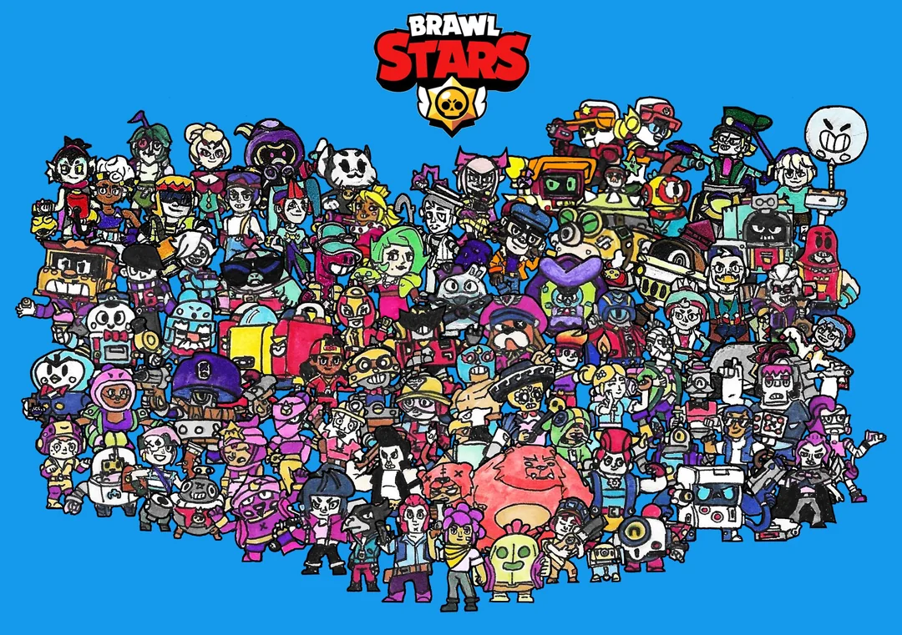

Brawlstars
The Evolution of Brawl Stars
Brawl Stars, developed by Supercell, has undergone a remarkable transformation since its initial beta release in 2017. From its humble beginnings as a simple mobile battle game, it has evolved into a global phenomenon with millions of active players. Over the years, Supercell has continually refined the game, introducing new features, improving graphics, and expanding the roster of brawlers. This evolution has ensured the game's relevance in a competitive mobile gaming market. By examining its development, gameplay changes, and growing community, we can appreciate the innovation behind Brawl Stars. Initially, Brawl Stars launched as a vertical-screen, tap-to-shoot game. The early version featured only a handful of brawlers and a limited selection of modes. Its unique approach to team-based combat quickly captured players' attention, but the gameplay felt restricted compared to today’s standards. After gathering feedback during the beta period, Supercell made a bold decision to overhaul the game's mechanics. They shifted to a horizontal layout, which allowed for more dynamic controls and better utilization of screen space. This pivotal change set the foundation for the game's long-term success. The addition of new game modes and maps has been instrumental in keeping Brawl Stars fresh and engaging. From the classic Gem Grab mode to the thrilling Battle Royale-inspired Showdown, the variety caters to diverse player preferences. Seasonal updates introduced limited-time modes, encouraging players to explore different strategies and playstyles. Additionally, the introduction of custom maps allowed the community to take part in shaping the gameplay experience. This feature not only expanded the content but also strengthened the bond between developers and players. The growing roster of brawlers is perhaps the most striking aspect of Brawl Stars' evolution. Starting with only a few characters, the game now boasts over 60 unique brawlers, each with distinct abilities and playstyles. Supercell's commitment to character design is evident in the creativity and balance they bring to new brawlers. Furthermore, the addition of skins and customization options has deepened the personalization aspect, making each player’s experience unique. This continuous expansion keeps players invested in mastering their favorite characters and exploring new ones. A major factor in Brawl Stars' growth is its thriving eSports scene and global community. With tournaments like the Brawl Stars Championship, Supercell has turned the game into a competitive spectacle. This not only motivates skilled players but also attracts casual gamers who enjoy watching professional matches. The community aspect is further enriched by regular developer updates and direct communication with players through social media and live streams. By fostering a sense of inclusivity and competition, Brawl Stars has built a loyal and engaged fanbase. Ultimately, the evolution of Brawl Stars showcases the importance of adaptability and innovation in game development. Through constant updates, thoughtful player feedback integration, and a commitment to community building, Supercell has transformed Brawl Stars from a niche mobile game into a global success. Its journey reflects the potential for mobile games to offer rich, evolving experiences that rival traditional gaming platforms. As the game continues to grow, its story stands as a testament to the ever-changing landscape of the gaming industry.
Some of the Brawlers are named:
- Damage Dealers (Attackers)
- Shelly (Shotgun-based attack, great at close range)
- Colt (Long-range shooter, good for precise hits)
- Brock (Rocket launcher, high burst damage)
- El Primo (Close-range brawler with a lot of health)
- Support Brawlers (Healers / Control)
- Poco (Heals allies with his attack and super)
- Pam (Heals teammates within the area of her super)
- Martha (Provides shields and healing to teammates)
- Sprout (Creates walls, useful for control)
- Snipers / Long-Range Specialists
- Barley (Throws explosive bottles from a distance)
- Brock (Rocket launcher, great for long-range damage)
- Penny (Long-range shots with explosive effects)
- Rico (Ricochet bullets that hit multiple targets)